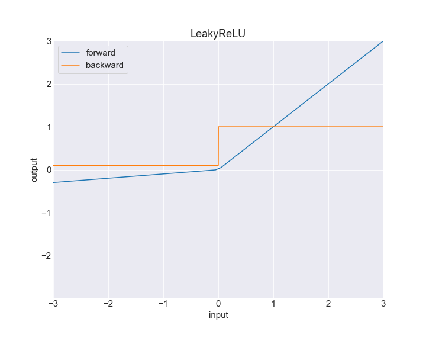
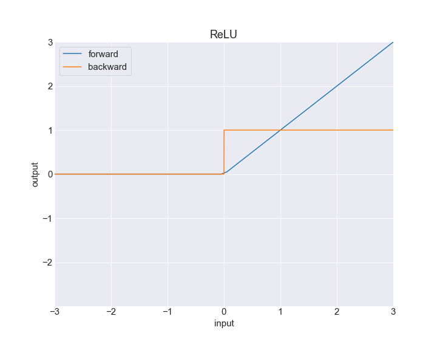
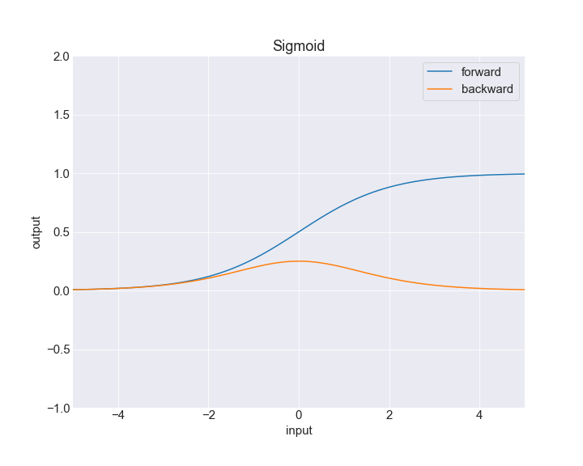
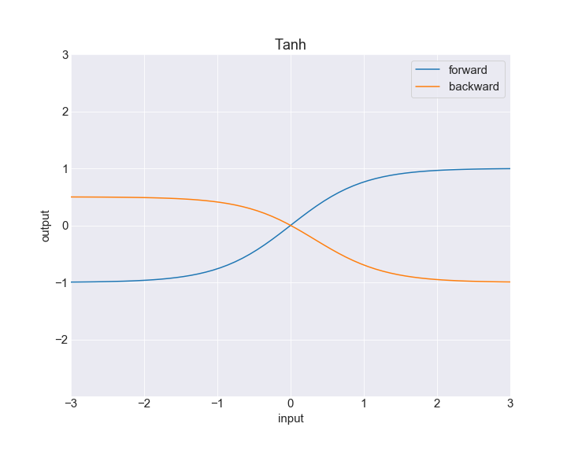

nets¶
NETS is divided in five main sub-packages:
autograd refers to the autograd system used,
nn refers to the core of the package, ie deep network models,
optim refers to optimizers used during the backpropagation to update weights and biases,
data refers to array container, like training and testing examples with their labels,
datasets refers to popular machine learning libraries for image analysis and NLP.
nets¶
nets.tensor¶
Defines tensors for deep learning application. A tensor is multi-dimensional array, similar to numpy arrays.
-
class
nets.tensor.Tensor(data, requires_grad=False, hooks=None)[source]¶ A Tensor is a multi dimensional array that track and record previous gradients, creating a dynamic computational graph.
-
append(t, axis=0)[source]¶ Append a value(- or tensor) to a
Tensor.Note
The operation takes place in-place and does not support autograd.
- Parameters
t (scale, Tensor) – object to add
- Returns
None
-
astype(new_type)[source]¶ Set a new type to the
Tensor’s data.- Parameters
new_type (type) – new type to convert the data
- Returns
None
-
backward(grad=None)[source]¶ Compute a single backward pass on all
Tensorlinked to this one. TheTensordepending to this top-levelTensor``are stored in the ``_hooksattribute. The backward pass compute a gradient back-propagation on allTensorregistered in_hooks. The backward pass gradient ingradattribute (and add upstream gradient if theTensoris used multiple times).- Parameters
grad (Tensor) – upstream gradient. Default is None, and will be set to
Tensor(1.0), a 0-dimensionalTensor.- Returns
None
Note
To be able to back-propagate, the top-level
Tensormust haverequires_gradset toTrueto propagate the gradient.
-
detach()[source]¶ Unlink the
Tensorto the computational graph. By calling this method, the attribute_hooksandgradare set to their default values,None.- Returns
None
-
flatten()[source]¶ Flatten a
Tensorwith a new shape. The transformation is not made in-place.- Returns
Tensor
-
item()[source]¶ Get the item (float, int etc.) of a 0-dimensional
Tensor. It will detach the tensor from the computational graph by setting_hooks = []andgrad = Noneto free memory and send this graph to the garbage collector.- Returns
Any
-
register_hook(hook)[source]¶ Register a hook to a
Tensor- Parameters
hook (Hook) – hook to register
- Returns
None
-
reshape(*shapes)[source]¶ Reshape a
Tensorwith a new shape. The transformation is not made in-place.Note
The new shape must have the same size of the actual shape. If its not the case, the reshape method will raise an error.
- Parameters
int (*shapes) – permutation
- Returns
Tensor
-
sum(axis=None)[source]¶ Sum the data along a given axis. If no axis are specified, all values within the
Tensorwill be summed.- Parameters
axis (int) – the index of the axis to sum on.
- Returns
Tensor
-
nets.numeric¶
The functional modules defines basic functions to generate tensors and transform data.
nets.functional¶
nets.autograd¶
nets.autograd.functions¶
This modules defines more complex operations, and defines the most popular functions such as:
exp,
log,
tanh,
sigmoid;
relu…
-
nets.autograd.functions.exp(t)[source]¶ Exponentiation f a tensor.
\[T_{out} = \text{exp}(T)\]- Parameters
t (Tensor) – input tensor to transform
- Returns
Tensor
-
nets.autograd.functions.leaky_relu(x: Array, alpha: Optional[float] = 0.01) → Array[source]¶ Variation from the original
relufunction, which can prevent ‘dying’reluthanks to a slopealpha.\[\text{leaky_relu(x)} = \max{(\alpha \times x, x)}\]- Parameters
alpha (float, optional) – slope towards \(-\infty\).
- Shape:
input: x (numpy.array): input to compute the
leaky_relufunction on.output: y (numpy.array):
leaky reluoutput, with the same shape thanx.
Examples:
>>> in_array = np.array([-5, 2, 6, -2, 4]) >>> alpha = 0.1 >>> out_array = leaky_relu(in_array, alpha)
See
LeakyReLUfor the activation implementation.
-
nets.autograd.functions.leaky_relu_prime(x: Array, alpha: Optional[float] = 0.01) → Array[source]¶ First order derivative of
leaky_relufunction, defined as:\[\begin{split}\text{leaky_relu'(x)} = \begin{cases} 1, &\quad x \ge 0 \\ \alpha, &\quad x < 0. \end{cases}\end{split}\]- Parameters
alpha (float, optional) – slope towards \(-\infty\).
- Shape:
input: x (numpy.array): input to compute the
leaky_relu_primefunction on.output: y (numpy.array): derivative of the input, with the same shape than
x.
Examples:
>>> in_array = np.array([-5, 2, 6, -2, 4]) >>> alpha = 0.1 >>> out_array = leaky_relu_prime(in_array, alpha)
See
LeakyReLUfor the activation implementation.
-
nets.autograd.functions.log(t)[source]¶ Compute the logarithm of a tensor object.
\[T_{out} = \text{log}(T)\]- Parameters
t (Tensor like) – input tensor
- Returns
Tensor
-
nets.autograd.functions.pow(t, power)[source]¶ Power a tensor-like object.
\[T_{out} = T^2\]- Parameters
t (Tensor like) – reference tensor
power (int) – power to elevate a tensor
- Returns
Tensor
-
nets.autograd.functions.relu(x: Array) → Array[source]¶ reluis a standard activation function, defined as:\[\text{relu(x)} = \max{(0, x)}\]- Shape:
input: x (numpy.array): input to compute the
relufunction on.output: y (numpy.array):
reluoutput, with the same shape thanx.
Examples:
>>> in_array = np.array([-5, 2, 6, -2, 4]) >>> out_array = relu(in_array)
See
ReLUfor the activation implementation.
-
nets.autograd.functions.relu_prime(x: Array) → Array[source]¶ First order derivative of the
relufunction.\[\begin{split}\text{relu'(x)} = \begin{cases} 1, &\quad x \ge 0 \\ 0, &\quad x < 0. \end{cases}\end{split}\]- Shape:
input: x (numpy.array): input to compute the
leaky_relufunction on.output: y (numpy.array): gradient of the input, with the same shape than
x.
Examples:
>>> in_array = np.array([-5, 2, 6, -2, 4]) >>> out_array = relu_prime(in_array)
See
ReLUfor the activation implementation.
-
nets.autograd.functions.sigmoid(x: Array) → Array[source]¶ Vanilla
sigmoidfunction, defined as:\[\text{sigmoid}(x) = \frac{1}{1 + e^{-x}}\]- Shape:
input: x (numpy.array): input to compute the
sigmoidfunction on.output: y (numpy.array):
sigmoidoutput, with the same shape thanx.
Examples:
>>> in_array = np.array([-5, 2, 6, -2, 4]) >>> out_array = sigmoid(in_array)
See
Sigmoidfor the activation implementation.
-
nets.autograd.functions.sigmoid_prime(x: Array) → Array[source]¶ First order derivative of
sigmoidfunction, defined as:\[\text{sigmoid'}(x) = (1 - \text{sigmoid}(x))\]- Shape:
input: x (numpy.array): input to compute the
sigmoid derivativefunction on.output: y (numpy.array): gradient of the input, with the same shape than
x.
Examples:
>>> in_array = np.array([-5, 2, 6, -2, 4]) >>> out_array = sigmoid_prime(in_array)
See
Sigmoidfor the activation implementation.
-
nets.autograd.functions.softmax(x: Array, axis: Optional[int] = 0) → Tensor[source]¶ softmaxfunction. The implementation chosen is not straight forward to prevent numerical instability.The \(i^{th}\) element of a softmax function evaluated on a vector \(x \in \mathbb{R}^n\) is given by:
\[\text{softmax}(x_{i}) = \frac{e^{x_i}}{\sum_{j=1}^{n} e^{x_j}}\]- Parameters
axis (int) – axis to consider for the
softmax. Default is0.
- Shape:
input: x (numpy.array): input to compute the
softmaxfunction on.output: y (numpy.array): hyper-plane of the input.
See
Softmaxfor the activation implementation.
-
nets.autograd.functions.sqrt(t)[source]¶ Square root of a tensor-like object.
\[T_{out} = T^2\]- Parameters
t (Tensor like) – reference tensor
power (int) – power to elevate a tensor
- Returns
Tensor
-
nets.autograd.functions.tanh(t: Tensor) → Tensor[source]¶ tanhstandard function, definead as:\[\text{tanh}(T) = \frac{e^{T} - e^{-T}}{e^{T} + e^{-T}}\]- Shape:
input: x (numpy.array): input to compute the
tanhfunction on.output: y (numpy.array):
tanhoutput, with the same shape than \(T\).
Examples:
>>> import nets >>> in_array = np.array([-5, 2, 6, -2, 4]) >>> out_array = nets.tanh(in_array)
See
Tanhfor the activation implementation.
-
nets.autograd.functions.tanh_prime(x: Array) → Array[source]¶ First order derivative of
tanhfunction, defined as:\[\text{tanh'}(x) = 1 - \text{tanh}^2(x)\]- Shape:
input: x (numpy.array): input to compute the
tanh derivativefunction on.output: y (numpy.array): gradient of the input, with the same shape than
x.
Examples:
>>> in_array = np.array([-5, 2, 6, -2, 4]) >>> out_array = tanh(in_array)
See
Tanhfor the activation implementation.
nets.autograd.hook¶
A Hook keeps track of gradients and operations.
nets.autograd.numeric¶
This modules defines basic transformations on a Tensor like transpose or reshape.
-
nets.autograd.numeric.append(t, value)[source]¶ Append multiples
Tensorfrom an iterable.Note
The
Tensoriniterableshould and must have the same shape.
-
nets.autograd.numeric.argmax(t, axis=None)[source]¶ Get the indices of maximum elements from a
Tensor.- Parameters
t (Tensor) – tensor get maximum indices from
axis (int, optional) – index of the axis. Default is
None.
- Returns
Tensor
-
nets.autograd.numeric.concatenate(iterable)[source]¶ Concatenate multiples
Tensorfrom an iterable.Note
The
Tensoriniterableshould and must have the same shape.- Parameters
iterable (tuple, list) – list containing
Tensorto concatenate.- Returns
the concatenation of all
Tensor.- Return type
-
nets.autograd.numeric.flatten(t)[source]¶ Reshape in 1-dimensional a
Tensor.- Parameters
t (Tensor) – tensor get reshape.
- Returns
Tensor
-
nets.autograd.numeric.max(t, axis=None)[source]¶ Get the maximum from a
Tensor.- Parameters
t (Tensor) – tensor to transform
axis (int, optional) – index of the axis to search. Default is
None.
- Returns
Tensor
-
nets.autograd.numeric.pad(t, padding, constant_values=0)[source]¶ Reshape a
Tensorto a bigger size and add apaddingon the side, with a0constant value.- Parameters
t (Tensor) – tensor to transform
padding (tuple) – padding dimensions
constant_values (scalar, optional) – scalar affected in the padding
- Returns
Tensor
nets.autograd.ops¶
Defines basic operations between two tensors, like addition, subtraction, dot product etc.
-
nets.autograd.ops.add(t1, t2)[source]¶ Add two tensor-like together.
\[T_{out} = T_1 + T_2\]- Parameters
t1 (Tensor like) – tensor to add
t2 (Tensor like) – second tensor to add with
- Returns
the sum of two Tensor-like object
- Return type
-
nets.autograd.ops.div(t1, t2)[source]¶ Divide two tensor-like object.
\[T_{out} = T_1 \times \frac{1}{T_2}\]- Parameters
t1 (Tensor like) – tensor to multiply
t2 (Tensor like) – tensor to invert
- Returns
Tensor
-
nets.autograd.ops.dot(t1, t2)[source]¶ Dot product of two matrices.
\[T_{out} = (t_{i, j}^{[out]})_{i, j} \quad where \quad t_{i, j}^{[out]} = \sum_{k=1}^{n} t_{i, k}^{[1]} \times t_{k, j}^{[2]}\]- Parameters
t1 (Tensor like) –
t2 (Tensor like) –
- Returns
Tensor
-
nets.autograd.ops.eq(t, other)[source]¶ Return a boolean tensor for equal condition.
\[condition = T == other\]- Parameters
t (Tensor) – tensor to compare
other (Tensor like) – object to compare the tensor
- Returns
Tensor
-
nets.autograd.ops.ge(t, other)[source]¶ Return a boolean tensor for greater or equal condition.
\[condition = T \ge other\]- Parameters
t (Tensor) – tensor to compare
other (Tensor like) – object to compare the tensor
- Returns
Tensor
-
nets.autograd.ops.gt(t, other)[source]¶ Return a boolean tensor for greater than condition.
\[condition = T > other\]- Parameters
t (Tensor) – tensor to compare
other (Tensor like) – object to compare the tensor
- Returns
Tensor
-
nets.autograd.ops.inverse(t)[source]¶ Inverse a tensor-like object.
\[T_{out} = \frac{1}{T}\]- Parameters
t (Tensor like) – tensor to inverse.
- Returns
Tensor
-
nets.autograd.ops.le(t, other)[source]¶ Return a boolean tensor for lower or equal condition.
\[condition = T \le other\]- Parameters
t (Tensor) – tensor to compare
other (Tensor like) – object to compare the tensor
- Returns
Tensor
-
nets.autograd.ops.lt(t, other)[source]¶ Return a boolean tensor for lower than condition.
\[condition = T < other\]- Parameters
t (Tensor) – tensor to compare
other (Tensor like) – object to compare the tensor
- Returns
Tensor
-
nets.autograd.ops.multiply(t1, t2)[source]¶ Elementwise multiplication of two tensors-like object.
\[T_{out} = T_1 \times T_2\]- Parameters
t1 (Tensor like) – tensor to multiply
t2 (Tensor like) – second tensor to multiply with
- Returns
Tensor
-
nets.autograd.ops.ne(t, other)[source]¶ Return a boolean tensor for not equal condition.
\[condition = T not other\]- Parameters
t (Tensor) – tensor to compare
other (Tensor like) – object to compare the tensor
- Returns
Tensor
-
nets.autograd.ops.neg(t)[source]¶ Oppose the values of a tensor.
\[T_{out} = - T\]- Parameters
t (Tensor) – tensor to oppose.
- Returns
Tensor
-
nets.autograd.ops.slice(t, indices)[source]¶ Slice a tensor from given indices.
- Parameters
t (Tensor) – tensor to slice
(tuple, int, (idxs) – ): indices to extract data
- Returns
Tensor
-
nets.autograd.ops.sub(t1, t2)[source]¶ Subtract two tensor-like object
\[T_{out} = T_1 - T_2\]- Parameters
t1 (Tensor like) – tensor to subtract
t2 (Tensor like) – second tensor to subtract with
- Returns
Tensor
nets.autograd.parameter¶
A parameter is a trainable tensor.
-
class
nets.autograd.parameter.Parameter(data=None, shape=None)[source]¶ Instantiate a parameter, made of trainable data. A trainable data is a value that will be updated during the back-propagation, usually it refers to
weightsandbiasesof a layer.-
classmethod
normal(shape, mu=0, sigma=1)[source]¶ Generate a
Parameterfollowing a normal distribution center atmuwith a standard deviation ofsigma.- Parameters
shape (tuple) – shape of the
Parametermu (scalar) – mean of the normal distribution. Default is
0.sigma (scalar) – standard deviation of the normal distribution. Default is
1.
- Returns
Parameter
-
classmethod
orthogonal(shape)[source]¶ Initializes weight parameters orthogonally. From the [exercise 02456 from DTU course](https://github.com/DeepLearningDTU/02456-deep-learning-with-PyTorch).
Note
Refer to [this paper](https://arxiv.org/abs/1312.6120) for an explanation of this initialization.
- Parameters
shape (tuple) – shape of dimensionality greater than 2 (weight matrix)
- Returns
Parameter
-
classmethod
scaled_weight(input_dim, output_dim)[source]¶ Scaled initialization from \(He et al.\)
- Parameters
input_dim (int) – dimension of the input layer
output_dim (int) – dimension of the output layer
- Returns
Parameter
-
classmethod
uniform(shape, low=-1, high=1)[source]¶ Generate a
Parameterwith data following a uniform distribution betweenlowerandupper.- Parameters
shape (tuple) – shape of the
Parameterlow (scalar) – lower bound of the uniform distribution. Default is
-1.high (scalar) – upper bound of the uniform distribution. Default is
1.
- Returns
Parameter
-
classmethod
nets.nn¶
The main core of NETS is located in nn package. The neural networks implemented are the most popular ones:
nets.nn.activation¶
This modules defines all activation function, used in neural networks to add non-linearity from one layer to another.
Usage:
import numpy as np
import nets.nn.activation as A
# Define a ReLU activation function
# This activation function is popular as an hidden activation function
activation_function = A.ReLU()
# Defines 3 1-D array of length 5, stacked together.
batch_input = np.array([[1, -2, 5, 10, -7],
[2, 4, 3, -2, 5],
[-3, 2, 8, 4, 0]])
# Check the result for one single pass
batch_output = activation_function(batch_input)
print(batch_output)
# Check the backward pass
backward = ReLU.backward(batch_ouput)
print(backward)
Out:
array([[1, 0, 5, 10, 0],
[2, 4, 3, 0, 5],
[0, 2, 8, 4, 0]])
array([[1, 0, 1, 1, 0],
[1, 1, 1, 0, 1],
[0, 1, 1, 1, 0]])
-
class
nets.nn.activation.Activation(func, func_prime)[source]¶ An activation modules is a transformation that modify its inputs element wise, usually it uses non-linearity functions.
-
class
nets.nn.activation.LeakyReLU[source]¶ LeakyReLUactivation function.\(\text{LeakyReLU.forward}(x) = \text{leaky_relu(x)} = \max{(\alpha \times x, x)}\)
\(\text{LeakyReLU.backward}(x) = \text{leaky_relu'(x)} = \begin{cases} 1, &\quad x \ge 0 \\ \alpha, &\quad x < 0. \end{cases}\)
Examples:
>>> activation = LeakyReLU() >>> batch_input = np.array([[-5, 2, 6, -2, 4], ... [2, 5, -6, 7, -3]]) >>> output = activation(batch_input) >>> gradient = activation.backward(output)
See
leaky_relu()andleaky_relu_derivative()for the functional implementation.
-
class
nets.nn.activation.ReLU[source]¶ ReLUactivation function.\(\text{ReLU.forward}(x) = \text{relu(x)} = \max{(0, x)}\)
\(\text{ReLU.backward}(x) = \text{relu'(x)} = \begin{cases} 1, &\quad x \ge 0 \\ 0, &\quad x < 0. \end{cases}\)
Examples:
>>> activation = LeakyReLU() >>> batch_input = np.array([[-5, 2, 6, -2, 4], ... [2, 5, -6, 7, -3]]) >>> output = activation(batch_input) >>> gradient = activation.backward(output)
See
relu()andrelu_derivative()for the functional implementation.
-
class
nets.nn.activation.Sigmoid[source]¶ Sigmoidactivation function.\(\text{Sigmoid.forward}(x) = \text{sigmoid}(x) = \frac{1}{1 + e^{-x}}\)
\(\text{Sigmoid.backward}(x) = \text{sigmoid'}(x) = (1 - \text{sigmoid}(x))\)
Examples:
>>> activation = Sigmoid() >>> batch_input = np.array([[-5, 2, 6, -2, 4], ... [2, 5, -6, 7, -3]]) >>> output = activation(batch_input) >>> gradient = activation.backward(output)
See
sigmoid()andsigmoid_derivative()for the functional implementation.
-
class
nets.nn.activation.Softmax(axis=0)[source]¶ Softmax activation function, which should be used only at the last layer to normalize outputs values between \([0, 1]\).
-
class
nets.nn.activation.Tanh[source]¶ Tanhactivation function.\(\text{Tanh.forward}(x) = \text{tanh}(x) = \frac{e^{x} - e^{-x}}{e^{x} + e^{-x}}\)
\(\text{Tanh.backward}(x) = \text{tanh'}(x) = 1 - \text{tanh}^2(x)\)
Examples:
>>> activation = Tanh() >>> batch_input = np.array([[-5, 2, 6, -2, 4], ... [2, 5, -6, 7, -3]]) >>> output = activation(batch_input) >>> gradient = activation.backward(output)
See
tanh()andtanh_derivative()for the functional implementation.
nets.nn.functional¶
Defines elementary functions used in Neural Network layers.
nets.nn.loss¶
Loss functions evaluate the precision and correctness of a model’s predictions. The most popular ones are MSE,
CrossEntropyLoss and Adam. Each loss functions presents advantages, and results may vary when choosing one from
another.
-
class
nets.nn.loss.CrossEntropyLoss[source]¶ Cross Entropy Loss. First, a softmax transformation is used to map the predictions between \([0, 1]\), then the cost is computed:
\[\text{CrossEntropyLoss} = - \frac{1}{N} \sum_{i=1}^{c}labels_{i}\log(pred_{i})\]-
forward(predictions, labels)[source]¶ Compute the cross entropy cost function.
- Parameters
predictions (numpy.array) – tensor of un-normalized floats with shape \((N, c)\).
labels (numpy.array) – tensor of integer values with shape \((N)\).
- Returns
the cost regarding the loss function.
- Return type
cost (float)
-
-
class
nets.nn.loss.Loss[source]¶ A loss function evaluate the correctness of a set of predictions regarding gold-labels. The predictions should be un-corrected, ie no transformations like
Softmaxshould have been used before. The loss function will do the transformation if necessary. The attributehistorykeeps track of the cost when the loss function is called.-
forward(predictions, labels)[source]¶ Compute the cross entropy cost function.
- Parameters
predictions (numpy.array) – tensor of un-normalized floats with shape \((N, c)\).
labels (numpy.array) – tensor of integer values with shape \((N)\).
- Returns
the cost regarding the loss function.
- Return type
cost (float)
-
-
class
nets.nn.loss.MSELoss[source]¶ Mean Square Error Loss, defined as:
\[\text{MSE} = \frac{1}{N}\sum_{i=1}^{c}(predictions - labels)^2\]-
forward(predictions, labels)[source]¶ Compute the cross entropy cost function.
- Parameters
predictions (numpy.array) – tensor of un-normalized floats with shape \((N, c)\).
labels (numpy.array) – tensor of integer values with shape \((N)\).
- Returns
the cost regarding the loss function.
- Return type
cost (float)
-
nets.nn.modules¶
nets.nn.conv¶
This modules defines a Convolution Neural Network (CNN) naively. This CNN is for test and comparisons purposes.
If you wan to use a more appropriate CNN for your models, use the CNN instead.
-
class
nets.nn.modules.conv.Conv2d(in_channels, out_channels, filter_size, stride=1, pad=0)[source]¶ Convolutional Neural Networks (CNN) are a class of Neural Networks that use convolution filters. Their particularity is their ability to synthesis information and learn spatial features. They are mainly used in Image Analysis, but are also known as sliding windows in Natural Language Processing.
Conv2dnetworks applies a 2-d convolution on a 4-d tensor.
nets.nn.dnn¶
-
class
nets.nn.modules.dnn.DNN(layer_dimensions, activation_hidden=ReLU( (parameters): ))[source]¶ Dense Neural Network.
-
layer_dimensions¶ listofintcontaining all layer dimensions. The dimension at indexiis the value oflayer_dimensionsat this index.- Type
list(int)
listofintcontaining only hidden dimensions.- Type
list(int)
-
training¶ Boolean to indicate if we are training or not. This function can namely be used for inference only, in which case we do not need to store the features values.
- Type
bool
activation function used in hidden layers.
- Type
-
activation_output¶ activation function used in the last layer.
- Type
-
_parameters¶ dictcontaining values of weights and biases for each layers. -weight_{i}: contains the weight matrix of layeri-bias_{i}: contains the bias array of layeri- Type
dict
-
_cache¶ dictwith - the linear combinations Z^[l] = W^[l]a^[l-1] + b^[l] for l in [1, L]. - the activations A^[l] = activation(Z^[l]) for l in [1, L]. We cache them in order to use them when computing gradients in the back propagation.- Type
dict
-
backward(outputs, labels)[source]¶ Update parameters using backpropagation algorithm.
- Parameters
outputs (numpy.array) – matrix of floats with shape (num_classes, batch_size).
labels (numpy.array) – numpy array of integers with shape (num_classes, batch_size). Collection of one-hot encoded true input labels.
- Returns
- Dictionary with matrices that is to be used in the parameter update. Contains
the gradient of the weights, grad_W^[l] for l in [1, L].
the gradient of the biases grad_b^[l] for l in [1, L].
- Return type
grad_params
-
forward(inputs)[source]¶ One forward step.
- Parameters
inputs (numpy.array) – float numpy array with shape (n^[0], batch_size). Input image batch.
- Returns
- float numpy array with shape (n^[L], batch_size). The output predictions of the
network, where n^[L] is the number of prediction classes. For each input i in the batch, output[c, i] gives the probability that input
ibelongs to classc.
- Return type
outputs (numpy.array)
-
nets.nn.dropout¶
Define a Dropout layer.
nets.nn.linear¶
Linear layers are widely used either for Dense Neural Module or Convolutional Neural Module, to cite the most
popular. The architecture is made of two sets of neurons aka perceptrons, all connected with weights and biases.
-
class
nets.nn.modules.linear.Linear(input_dim, output_dim)[source]¶ A linear layer is made of a weight matrix \(W\) of shape \((\text{input_dim}, \text{output_dim})\) and a bias vector \(b\) of shape \((\text{output_dim})\). The linear transformation for an incoming vector \(x\) of shape \((N, \text{input_dim})\) results in a vector \(y\) of shape \((N, \text{output_dim})\):
\[y = x W + b\]Examples:
>>> model = Linear(5, 10) >>> batch_input = np.array([[-5, 2, 6, -2, 4], ... [2, 5, -6, 7, -3]]) >>> batch_pred = model(batch_input)
-
backward(dout)[source]¶ Backward pass for a single Linear layer.
- Shape:
input (Tensor): upstream gradient.
output (Tensor): downstream gradient after a linear transformation.
-
forward(x)[source]¶ Forward pass. Compute the linear transformation and save the results in the _cache, which will be used during the backward pass.
- Shape:
input (numpy.array): batch inputs of shape.
- output (numpy.array): results of the linear transformation,
of shape \((N, \text{input_dim})\), with \(N = \text{batch_size}\).
-
init_params(mode=None)[source]¶ Initialize the parameters dictionary. For Dense Neural Module, the parameters are either weights or biases. They are saved in the dictionary _params with the following keys: weight matrix
w, bias vectorb. The initialization can be changed withmodeparameter, between the default uniform \(\mathcal{U}(0, 1)\) initialization or use \(\text{He et al.} \quad \mathcal{N} (0, \frac{1}{input_dim})\).
-
nets.nn.module¶
Modules are the main architecture for all transformations from one tensor to another. In other words,
a neural network is a succession of modules (layer, convolution, activation…).
When building a custom neural network, your model must inherits from Module abstract class and override the
forward method. Moreover, you can specify the back-propagation rule in backward method. Usually, the
backward method computes the naive back-propagation using only local gradients saved in the modules’s _cache.
If you don’t specify it, NETS will uses autograd functionality to compute all gradients.
-
class
nets.nn.modules.module.Module[source]¶ Abstract Module architecture. All models used to transform tensors should extends from this class to benefits
forwardandbackwardpropagation rules.-
abstract
forward(*inputs)[source]¶ One forward step. Gradients and outputs should be saved in the
_cachewhen training, to be able to perform the backward pass.
-
get_name()[source]¶ Quick access to get the name of a modules.
- Returns
modules’s name
- Return type
string
-
abstract
nets.nn.pool¶
This modules defines a Pooling layer. Usually such layer is used after a convolutional layer.
nets.nn.rnn¶
Defines a basic Recurrent Neural Network.
-
class
nets.nn.modules.rnn.RNN(input_dim, hidden_dim)[source]¶ Recurrent neural network (RNN) is a type of neural network that has been successful in modelling sequential data, e.g. language, speech, protein sequences, etc.
A RNN performs its computations in a cyclic manner, where the same computation is applied to every sample of a given sequence. The idea is that the network should be able to use the previous computations as some form of memory and apply this to future computations. From the [exercise 02456 from DTU course](https://github.com/DeepLearningDTU/02456-deep-learning-with-PyTorch).
-
backward(dout)[source]¶ Computes the backward pass of a vanilla RNN. Save gradients parameters in the
_gradsparameter.
-
forward(inputs)[source]¶ Computes the forward pass of a vanilla RNN.
\[ \begin{align}\begin{aligned}h_{0} = 0\\h_t = ext{tanh}(x W_{ih} + h_{t-1} W_{hh} + b_{h})\\y = h_t W_{ho} + b_{o}\end{aligned}\end{align} \]- Parameters
inputs – sequence of inputs to be processed
Set the first hidden cell.
-
nets.nn.rnnbase¶
Defines the general structure of a Recurrent Network, which can takes the form of a:
Recurrent Neural Network,
Long Short Term Memory,
Gated Recurrent Unit.
nets.nn.sequential¶
Sequential models are an ordered succession of modules.
-
class
nets.nn.modules.sequential.Sequential(*modules)[source]¶ A
Sequentialmodel is build from a succession ofModules. All of them must have aforwardmethod. In addition, abackwardpass is created by default, running the back-propagation in all modules previously added. If for one of the modules thebackwardpass is not implemented, it will raise an error.
nets.optim¶
nets.optim.optimizer¶
nets.optim.adagrad¶
nets.optim.adam¶
nets.optim.rmsprop¶
Uses the RMSProp update rule, which uses a moving average of squared gradient values to set adaptive per-parameter learning rates.
nets.optim.sgd¶
Stochastic Gradient Descent is a popular optimizer for machine learning purposes.
nets.solver¶
nets.solver.solver¶
-
class
nets.solver.solver.Solver(model=None, criterion=None, optimizer=None)[source]¶ Train and evaluate models.
- Parameters
- Attributes::
model (Module): model to optimize or test. checkpoint (dict): checkpoint of the best model tested. criterion (Loss): loss function. optimizer (Optimizer): optimizer for weights and biases. performance (dict):
- train (dict):
loss (list(float))
accuracy (list(float))
precision (list(float))
recall (list(float))
macro_f1 (list(float))
confusion_matrix (list(list(list(int))))
- eval (dict):
loss (list(float))
accuracy (list(float))
precision (list(float))
recall (list(float))
macro_f1 (list(float))
confusion_matrix (list(list(list(int))))
-
abstract
evaluate(iterator, *args, **kwargs)[source]¶ Evaluate one time the model on iterator data.
- Parameters
iterator (Iterator) – iterator containing batch samples of data.
- Returns
the performance and metrics of the training session.
- Return type
dict
-
get_accuracy(y_tilde, y)[source]¶ Compute accuracy from predicted classes and gold labels.
- Parameters
- Returns
the mean of correct answers.
- Return type
float
-
run(epochs, train_iterator, eval_iterator, *args, **kwargs)[source]¶ Train and evaluate a model X times. During the training, both training and evaluation results are saved under the performance attribute.
- Parameters
epochs (int) – number of times the model will be trained.
train_iterator (Iterator) – iterator containing batch samples of data.
eval_iterator (Iterator) – iterator containing batch samples of data.
verbose (bool, optional) – if True display a progress bar and metrics at each epoch. The default is True.
- Returns
None
Examples:
>>> performer = MySolver(model, criterion, optimizer) >>> # Train & eval EPOCHS times >>> EPOCHS = 10 >>> performer.run(EPOCHS, train_iterator, eval_iterator, verbose=True) Epoch: 1/10 Training: 100% | [==================================================] | Time: 2m 26s Validation: 100% | [==================================================] | Time: 0m 4s Stats Training: | Loss: 0.349 | Acc: 84.33% | Prec.: 84.26% | Rec.: 84.33% | F1: 84.26% Stats Evaluation: | Loss: 0.627 | Acc: 72.04% | Prec.: 72.22% | Rec.: 72.17% | F1: 72.22% >>> # ...
nets.data¶
nets.data.batch¶
A Batch is a set of examples, usually normalized and scaled for faster predictions.
nets.data.dataset¶
nets.data.example¶
-
class
nets.data.example.Example[source]¶ Store a single training / testing example, and store it as an attribute. Highly inspired from PyTorch [example](https://github.com/pytorch/text/blob/master/torchtext/data/example.py)
-
class
nets.data.example.Field(transform=None, dtype=None)[source]¶ A
Fielddefines the data to process from a raw dataset. It will convert the data into a tensor. The data can be a string, integers, float etc. The data is meant to be preprocessed and the attributetransformhandles the way the user want to process the raw data.
nets.data.iterator¶
This modules defines how the data should be called from a datasets.
This takes into account shuffle mode.
nets.datasets¶
nets.datasets.cifar¶
Load and preprocess the CIFAR-10 dataset.
-
class
nets.datasets.cifar.CIFAR10(filepath, transform=None)[source]¶ CIFAR-10 dataset, available at https://www.cs.toronto.edu/~kriz/cifar-10-python.tar.gz
The CIFAR-10 dataset consists of 60000 32x32 colour images in 10 classes, with 6000 images per class. There are 50000 training images and 10000 test images, with the following classes:
Label
Description
0
airplane
1
automobile
2
bird
3
cat
4
deer
5
dog
6
frog
7
horse
8
ship
9
truck
Note
The dataset is divided into five training batches and one test batch, each with 10000 images. The test batch contains exactly 1000 randomly-selected images from each class. The training batches contain the remaining images in random order, but some training batches may contain more images from one class than another. Between them, the training batches contain exactly 5000 images from each class.
-
classmethod
splits(root='.data', train='data_batch_', test='test_batch', **kwargs)[source]¶ Loads training, validation, and test partitions of the cifar10 dataset (https://www.cs.toronto.edu/~kriz/cifar.html). If the data is not already contained in
rootfolder, it will download it.- Parameters
root (string) – relative or absolute path of the dataset.
train (string) – training data path
test (string) – testing data path
- Returns
training and testing datasets
- Return type
tuple(Dataset)
-
classmethod
nets.datasets.mnist¶
Defines and pre-process the MNIST dataset. The data will be converted into Tensor objects.
-
class
nets.datasets.mnist.MNIST(path_data, path_label, transform=None)[source]¶ Loads training, validation, and test partitions of the mnist dataset (http://yann.lecun.com/exdb/mnist/). If the data is not already contained in data_dir, it will try to download it.
This dataset contains 60000 training examples, and 10000 test examples of handwritten digits in {0, …, 9} and corresponding labels. Each handwritten image has an “original” dimension of 28x28x1, and is stored row-wise as a string of 784x1 bytes. Pixel values are in range 0 to 255 (inclusive).
- Parameters
data_dir – String. Relative or absolute path of the dataset.
devel_size – Integer. Size of the development (validation) dataset partition.
- Returns
float64 numpy array with shape [784, 60000-devel_size] with values in [0, 1]. Y_train: uint8 numpy array with shape [60000-devel_size]. Labels. X_devel: float64 numpy array with shape [784, devel_size] with values in [0, 1]. Y_devel: uint8 numpy array with shape [devel_size]. Labels. X_test: float64 numpy array with shape [784, 10000] with values in [0, 1]. Y_test: uint8 numpy array with shape [10000]. Labels.
- Return type
X_train
-
classmethod
splits(root='.data', train_data='train-images-idx3-ubyte.gz', train_label='train-labels-idx1-ubyte.gz', test_data='t10k-images-idx3-ubyte.gz', test_label='t10k-labels-idx1-ubyte.gz', **kwargs)[source]¶ Loads training and test partitions of the [mnist dataset](https://www.cs.toronto.edu/~kriz/cifar.html). If the data is not already contained in the
rootfolder, it will download it.- Parameters
root (str) – relative or absolute path of the dataset.
- Returns
training and testing datasets
- Return type
tuple(Dataset)
nets.datasets.svhn¶
nets.utils¶
nets.utils.display¶
This modules defines basic function to render a simulation, like progress bar and statistics table.
-
nets.utils.display.describe_stats(state_dict)[source]¶ Describe and render a dictionary. Usually, this function is called on a
Solverstate dictionary, and merged with a progress bar.- Parameters
state_dict (dict) – the dictionary to showcase
- Returns
the dictionary to render.
- Return type
string
-
nets.utils.display.get_time(start_time, end_time)[source]¶ Get ellapsed time in minutes and seconds.
- Parameters
start_time (float) – strarting time
end_time (float) – ending time
- Returns
elapsed time in minutes elapsed_secs (float): elapsed time in seconds.
- Return type
elapsed_mins (float)
-
nets.utils.display.progress_bar(current_index, max_index, prefix=None, suffix=None, start_time=None)[source]¶ Display a progress bar and duration.
- Parameters
current_index (int) – current state index (or epoch number).
max_index (int) – maximal numbers of state.
prefix (str, optional) – prefix of the progress bar. The default is None.
suffix (str, optional) – suffix of the progress bar. The default is None.
start_time (float, optional) – starting time of the progress bar. If not None, it will display the time spent from the beginning to the current state. The default is None.
- Returns
None. Display the progress bar in the console.
nets.utils.errors¶
Defines custom errors.
nets.utils.functions¶
Utility functions.
-
nets.utils.functions.append2dict(dict1, *dicts)[source]¶ Append key values to another dict with the same keys.
Args: dict1 (dict): dictionary where values will be added. dict2 (dict) dictionaries to extract values and append to another one.
This dictionary should have the same keys as dict1.
- Returns
None
Examples:
>>> dict1 = {"key1": [], "key2": []} >>> dict2 = {"key1": 0, "key1": 1} >>> append2dict(dict1, dict2) >>> dict1 {"key1": [0], "key2": [1]} >>> dict3 = {"key1": 2, "key1": 3} >>> dict4 = {"key1": 4, "key1": 5} >>> append2dict(dict1, dict3, dict4) >>> dict1 {"key1": [0, 2, 4], "key2": [1, 3, 5]}